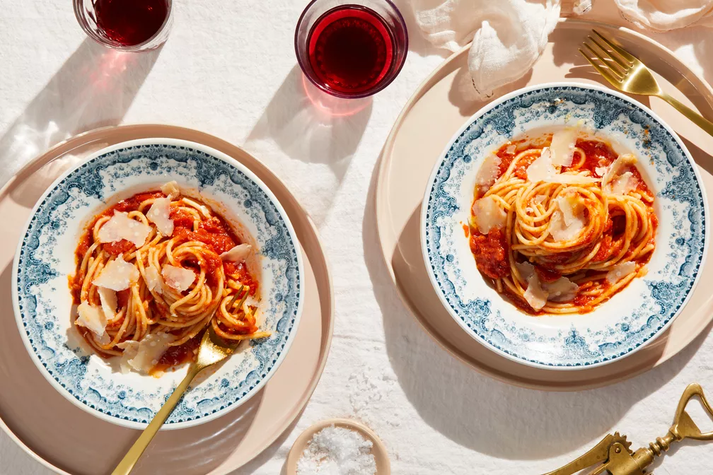

Tomata Sauce by Marcella Hazan

After cooking for a while, you start to pick up on a few dishes that the cheap and easy method just isn't worth the convenience. For me, that was tomato sauce. While this takes a significantly higher amount of time than a jar of Prego, the results are absolutely worth it – and most of the time is inactive anyway!
I can not overstate how important good tomatoes are for this recipe. USE GOOD SAN MARZANO OR SAN MARZANO STYLE TOMATOES.
Ingredients
- 8oz Elbow Macaroni
- 8oz Evaporated Milk
- 8oz medium cheddar cheese (opt. sub for gouda or similar cheese)
Instructions
- Measure out equal parts (8oz in this case) of elbow macaroni, evaporated milk, and freshly grated medium cheddar
- Add pasta to a saucepan and add enough water to cover just over the pasta
- Add a pinch of salt and bring to a boil
- Boil the pasta until almost all the liquid has almost completely evaporated, stirring occasionally
- Add your evaporated milk, stir and bring back to a gentle simmer
- Stir in the grated cheese until thoroughly combined
- Taste for seasoning, add salt or additional flavorings (bacon would be good)